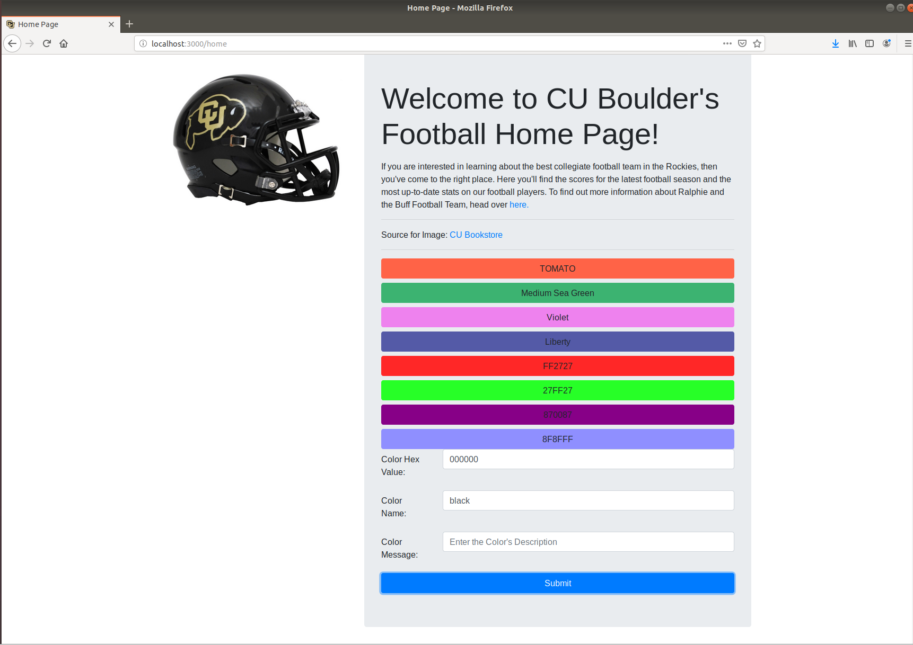

Lab 7 Node.JS
In this lab, we will integrate all of the components that we have learned in this course so far. We will create a backend server and connect it to our database. We will also connect our backend server to our front-end or client-side webpages. You will edit the extended template (below) which includes all of the files necessary to work with Node.
To receive credit for this lab, you MUST complete steps 1 and 2 in recitation and get marked off by your TA. You MUST complete step 3 and 4 (either in recitation or on your own) and upload "lab_7_link.txt" to Canvas by the deadline.
It is highly recommended that you work with a partner on this lab -- it's a long one. Make sure to include your partners name at the top of "lab_7_link.txt".
Download the extended template and make sure you extract the files before using them.
Useful link to help with this lab :
- Pug ( previously also known as Jade): pugjs documentation
| Est. Time ⏱ |
|---|
| 120 minutes |
1. Update PostgreSQL Database
(10 Minutes)
We have to make a few updates to our PostgreSQL database. We'll need to add a password to our database, update the football_players table to include image urls, and add a new table "favorite_colors".
- Switch to the postgres user account
-
During the installation process PostgreSQL created a new user account named postgres. You'll be using this user account for most of your database interactions.
sudo -u postgres psql - Create a password
-
The node.js server will later on be setup to directly access our postgres database. But in order to do that, our database has to have a password for our database connection tools. Make sure you enter a password that you can remember!
\password - Switch to the football_db database
-
\c football_db; - Check the views in the database and drop them
-
If you do not drop the views first you will not be allowed to drop the tables.
\dv; DROP VIEW "view name you want to drop"; - Update our tables
- Copy the following code into psql terminal to create the football_player, footbal_games, and favorite_colors tables and populate them with data. If you are having problems with your PostgreSQL installation, MAKE SURE TO DO THIS LAB WITH A PARTNER
DROP TABLE football_games; CREATE TABLE IF NOT EXISTS football_games ( visitor_name VARCHAR(30), /* Name of the visiting team */ home_score SMALLINT NOT NULL, /* Final score of the game for the Buffs */ visitor_score SMALLINT NOT NULL,/* Final score of the game for the visiting team */ game_date DATE NOT NULL, /* Date of the game */ players INT[] NOT NULL, /* This array consists of the football player ids (basically a foreign key to the football_player.id) */ PRIMARY KEY(visitor_name, game_date) /* A game's unique primary key consists of the visitor_name & the game date (this assumes you can't have multiple games against the same team in a single day) */ ); DROP TABLE football_players; CREATE TABLE IF NOT EXISTS football_players( id SERIAL PRIMARY KEY, /* Unique identifier for each player (it's possible multiple players have the same name/similiar information) */ name VARCHAR(50) NOT NULL, /* The player's first & last name */ year VARCHAR(3), /* FSH - Freshman, SPH - Sophomore, JNR - Junior, SNR - Senior */ major VARCHAR(4), /* The unique 4 character code used by CU Boulder to identify student majors (ex. CSCI, ATLS) */ passing_yards SMALLINT, /* The number of passing yards in the players entire football career */ rushing_yards SMALLINT, /* The number of rushing yards in the players entire football career */ receiving_yards SMALLINT, /* The number of receiving yards in the players entire football career*/ img_src VARCHAR(200) /* This is a file path (absolute or relative), that locates the player's profile image */ ); INSERT INTO football_games(visitor_name, home_score, visitor_score, game_date, players) VALUES('Colorado State', 45, 13, '20180831', ARRAY [1,2,3,4,5]), ('Nebraska', 33, 28, '20180908', ARRAY [2,3,4,5,6]), ('New Hampshire', 45, 14, '20180915', ARRAY [3,4,5,6,7]), ('UCLA', 38, 16, '20180928', ARRAY [4,5,6,7,8]), ('Arizona State', 28, 21, '20181006', ARRAY [5,6,7,8,9]), ('Southern California', 20, 31, '20181013', ARRAY [6,7,8,9,10]), ('Washington', 13, 27, '20181020', ARRAY [7,8,9,10,1]), ('Oregon State', 34, 41, '20181027', ARRAY [8,9,10,1,2]), ('Arizona', 34, 42, '20181102', ARRAY [9,10,1,2,3]), ('Washington State', 7, 31, '20181110', ARRAY [10,1,2,3,4]), ('Utah', 7, 30, '20181117', ARRAY [1,2,3,4,5]), ('California', 21, 33, '20181124', ARRAY [2,3,4,5,6]) ; INSERT INTO football_players(name, year, major, passing_yards, rushing_yards, receiving_yards, img_src) VALUES('Cedric Vega', 'FSH', 'ARTS', 15, 25, 33, '../resources/img/player1.jpg'), ('Myron Walters', 'SPH', 'CSCI', 32, 43, 52, '../resources/img/player2.jpg'), ('Javier Washington', 'JNR', 'MATH', 1, 61, 45, '../resources/img/player3.jpg'), ('Wade Farmer', 'SNR', 'ARTS', 14, 55, 12, '../resources/img/player4.jpg'), ('Doyle Huff', 'FSH', 'CSCI', 23, 44, 92, '../resources/img/player5.jpg'), ('Melba Pope', 'SPH', 'MATH', 13, 22, 45, '../resources/img/player6.jpg'), ('Erick Graves', 'JNR', 'ARTS', 45, 78, 98, '../resources/img/player7.jpg' ), ('Charles Porter', 'SNR', 'CSCI', 92, 102, 125, '../resources/img/player8.jpg'), ('Rafael Boreous', 'JNR', 'MATH', 102, 111, 105, '../resources/img/player9.jpg'), ('Jared Castillo', 'SNR', 'ARTS', 112, 113, 114, '../resources/img/player10.jpg'); DROP TABLE favorite_colors; CREATE TABLE IF NOT EXISTS favorite_colors( hex_value VARCHAR(6) PRIMARY KEY, /* This is the hexvalue for the color, it assumes that the value DOES NOT # */ name VARCHAR(50), /* The html safe name for the color. This can be null */ color_msg TEXT NOT NULL /* A message describing the chosen color */ ); INSERT INTO favorite_colors(hex_value, name, color_msg) VALUES('FF6347', 'TOMATO', 'This color gets it name from the red fruit that at one time was considered poisonous!'), ('3CB371', 'Medium Sea Green', 'Not sure what the difference is between Small & Large Sea Green... but I guess this one is in between them.'), ('EE82EE','Violet', 'Roses are Red, Violets are blue...'), ('545AA7','Liberty', 'Not to be confused with the color of the Liberty Bell (which is indeed a copper color)'); INSERT INTO favorite_colors(hex_value, color_msg) VALUES('FF2727', 'An unnamed red color'), ('27FF27', 'An unnamed green color'), ('870087', 'An unnamed magenta color'), ('8F8FFF', 'An unnamed blue color'); - Exit the psql terminal
-
\q - Ensure our postgres service is running in the background
-
sudo -u postgres service postgresql start
2. Home Page
(40 Minutes)
First, we will implement our home page. This will include handling a GET request, POST request, and accessing our postgres database that we updated in the previous step.
- 1. Handling a Get Request
-
Let's start by adding a way for us to access our home page, via a GET request. Copy the following code into your server.js file (right after the login & registration pages' app.get())
More informationapp.get('/home', function(req, res) { res.render('pages/home',{ my_title:'Home Page', color: 'FF0000', color_msg: 'The Color Red' }); });
Start our Webserver
To load our home page, we will need to first start up our Node.js server. Copy the following command into your terminal (make sure you are in the same directory as your server.js file!)
node server.js (out)3000 is the magic port
View our Webpage
To view our homepage, go to localhost:3000/home. For this lab, our server will only be accessible locally, so we will use localhost for our ip-address. We will follow this with our port number (3000) and the route we are taking "/home". Now, you will notice our background-color hasn't changed, nor is our message ('The Color Red') displayed. We will need to update our home.pug file to make use of the parameters from our HTTP request.
-
SUGGESTION: It is very important to manage the whitespace when using pug!
- 2. Update Home.pug
-
Open up the home.pug file (inside views/pages) and you will find a commented line called TODO: FIRST PUG UPDATE. Add the following code, which will now use our new parameters!
More information- if(color) p= color_msg body(style="background-color: #"+color)
Refresh Home Page
After you have updated the .pug file, you can simply refresh your browser to view the changes. You only have to restart your server when you make changes to the server.js file
- 3. Handle a Database Request
-
Now we will work on handling a simple database request. Our goal here is to have our home page list a button for each color option in our favorite_colors table. Let's start by replacing our previous get request in our server.js file with the following code:
More informationapp.get('/home', function(req, res) { var query = 'select * from favorite_colors;'; db.any(query) .then(function (rows) { res.render('pages/home',{ my_title: "Home Page", data: rows, color: '', color_msg: '' }) }) .catch(function (err) { // display error message in case an error request.flash('error', err); response.render('pages/home', { title: 'Home Page', data: '', color: '', color_msg: '' }) }) });
-
Do not forget to change the postgres password in server.js file. It is set to 'pwd' now, change it to the password you set at the beginning.
- 4. Iterate over Query Results in home.pug
-
Now that we have access to our favorite_colors' data, we can update our home page to include some buttons and a form to update our webpage's background-color. Add the following code below the TODO: Second Pug Update, which is listed inside of the home.pug file.
More information- if(data) for item in data if(item.name) button.btn.btn-block(type="submit", name="color_selection", value= item.hex_value, style="background-color: #" + item.hex_value)= item.name else button.btn.btn-block(type="submit", name="color_selection", value= item.hex_value, style="background-color: #" + item.hex_value)= item.hex_value
Restart The Server
Now that our home.pug file and server.js files have been updated, go ahead and restart the Node.js server. Remember you can use ctrl + c to end a running application in Linux. Then you can re-run "node server.js", to restart our server. Refresh your webpage and you should now see a series of buttons displayed.

- 5. Process a GET Request's Parameters
-
Our home page has a form which contains all of our potential color options. But it still cannot change our background color! We need to add a new route to our server.js file which can accept and process our GET request's color_selection parameter. Add the following code, below our previous app.get(/home). ADD THIS CODE, this will NOT replace our existing get.app('\home').
More informationapp.get('/home/pick_color', function(req, res) { var color_choice = req.query.color_selection; var color_options = 'select * from favorite_colors;'; var color_message = "select color_msg from favorite_colors where hex_value = '" + color_choice + "';"; db.task('get-everything', task => { return task.batch([ task.any(color_options), task.any(color_message) ]); }) .then(info => { res.render('pages/home',{ my_title: "Home Page", data: info[0], color: color_choice, color_msg: info[1][0].color_msg }) }) .catch(error => { // display error message in case an error req.flash('error', error);//if this doesn't work for you replace with console.log res.render('pages/home', { title: 'Home Page', data: '', color: '', color_msg: '' }) }); });
- 6. Add POST Request Form
-
Our final task for our home page is to include a form that lets us add a new favorite color, via a POST request. Copy and paste the following code below TODO: Third Update, within the form tags for our POST request!
div.form-group.row label.col-sm-2.col-form-label(for="color_hex") Color Hex Value: div.col-sm-10 input.form-control#color_hex(type="text", name="color_hex", placeholder="Enter Hex Value", maxlength="6") div.form-group.row label.col-sm-2.col-form-label(for="color_name") Color Name: div.col-sm-10 input.form-control#color_name(type="text", name="color_name", placeholder="Enter Color's Name") div.form-group.row label.col-sm-2.col-form-label(for="color_message") Color Message: div.col-sm-10 input.form-control#color_message(type="text", name="color_message", placeholder="Enter the Color's Description") button.btn.btn-primary.btn-block(type="submit") Submit - 7. Handle the POST Request's Parameters
-
The following code is the last update we need to make to our server.js (with respects to our home page). We'll be adding an app.post(). It will use the same route as our get request ('/home/pick_color') but processes the form data using a POST request and applies an insert to our favorite_colors table.
More informationapp.post('/home/pick_color', function(req, res) { var color_hex = req.body.color_hex; var color_name = req.body.color_name; var color_message = req.body.color_message; var insert_statement = "INSERT INTO favorite_colors(hex_value, name, color_msg) VALUES('" + color_hex + "','" + color_name + "','" + color_message +"') ON CONFLICT DO NOTHING;"; var color_select = 'select * from favorite_colors;'; db.task('get-everything', task => { return task.batch([ task.any(insert_statement), task.any(color_select) ]); }) .then(info => { res.render('pages/home',{ my_title: "Home Page", data: info[1], color: color_hex, color_msg: color_message }) }) .catch(error => { // display error message in case an error req.flash('error', error); //if this doesn't work for you replace with console.log res.render('pages/home', { title: 'Home Page', data: '', color: '', color_msg: '' }) }); });
- More information: GET vs. POST
-
GET Request
A get request will pass information to the server via the URL by appending parameters & values to the end of the URL address. This information can then be parsed and processed by the server. Key Benefit: A get request is visible to the user and can therefore be bookmarked, saved, and shared by the userBasic Get Form
form(action="route/to/take", method="get") input(type="text", placeholder="Text here", name="parameter_name") button(type="submit") SubmitDisplayed as:
Handling A GET Request
More informationapp.get('/route/to/take', function(req, res) { var get_variable = req.query.parameter_name; res.render('pages/web_page_name',{ text_variable:"Text Value", number_variable: 5, parameter_variable: get_variable }); });
POST Request
A post request will pass information to the server via a data package, which is hidden from the user. But be aware, this does not hide the information from anyone "sniffing" the network. You will have to use other tools (such as SSL) to properly secure the post request. Key Benefit: Information is hidden from the user (& with SSL it can be secured), which makes this a great option for login information & handling form data like account registration.Basic Post Form
!-- The only difference here is method has changed to post! --> form(action="route/to/take", method="post") input(type="text", placeholder="Text here", name="parameter_name") button(type="submit") SubmitDisplayed as:
Handling A POST Request
More informationapp.post('/route/to/take', function(req, res) { var get_variable = req.body.parameter_name; res.render('pages/web_page_name',{ text_variable:"Text Value", number_variable: 5, parameter_variable: get_variable }); });
3. Team Stats Page
(30 Minutes)
TODO: Edit your sever.js and team_stats.pug files to populate the two tables.
Team Stats Page: /team_stats - get request (no parameters) This route will require no parameters. It will require 3 postgres queries which will: 1. Retrieve all of the football games in the Fall 2018 Season 2. Count the number of winning games in the Fall 2018 Season 3. Count the number of lossing games in the Fall 2018 Season The three query results will then be passed on to the team_stats view (pages/team_stats). The team_stats view will display all fo the football games for the season, show who won each game, and show the total number of wins/losses for the season.- A Single Query
-
More informationvar query = 'SELECT * FROM table_name;'; db.any(query) .then(function (rows) { res.render('pages/page_name',{ my_title: "My Title Here", data: rows, }) }) .catch(function (err) { // display error message in case an error request.flash('error', err); res.render('pages/page_name',{ my_title: "My Title Here", data: '', }) })
- Multiple Queries
-
More informationvar query1 = 'select * from table_name;'; var query2 = 'select * from table_name_2;'; var query3 = 'select * from table_name_3;'; db.task('get-everything', task => { return task.batch([ task.any(query1), task.any(query2), task.any(query3) ]); }) .then(data => { res.render('pages/page_name',{ my_title: "Page Title Here", result_1: data[0], result_2: data[1], result_3: data[2] }) }) .catch(error => { // display error message in case an error request.flash('error', err); res.render('pages/page_name',{ my_title: "Page Title Here", result_1: '', result_2: '', result_3: '' }) });
4. Football Player Page
(40 Minutes)
TODO: Edit your server.js and player_info.pug files to populate the drop down selector and the player information table.
Football Player Page: /player_info - get request (no parameters) This route will handle a single query to the football_players table which will retrieve the id & name for all of the football players. Next it will pass this result to the player_info view (pages/player_info), which will use the ids & names to populate the select tag for a form /player_info/select_player - get request (player_id) This route will handle three queries and a work with a single parameter. Parameter: player_id - this will be a single number that refers to the football player's id. Queries: 1. Retrieve the user id's & names of the football players (just like in /player_info) 2. Retrieve the specific football player's informatioin from the football_players table 3. Retrieve the total number of football games the player has played
Submission Guidelines
- Create a new github repo and upload Lab_Website_3
-
- On GitHub, create a new repository called Lab_Website_3. Make sure you don't overwrite any of the previous repos.
- Upload your Lab_Website_3 folder containing the entire directory structure for your website to GitHub.
git init #MAKE SURE YOU ARE IN THE FOLDER Lab_Website_3 AND NOT IN ANY OTHER FOLDER BEFORE YOU RUN git init git add . git commit -m "Adding all of the files for lab 7" git push - Create a link to your GitHub repo
-
In a text file (lab_7_link.txt), write down the following:
- Your name
- You partner's name (if you have one)
- The link to your Lab_Website_3 Github Repo. (Make sure the repo is public!!!)
- Submit to Canvas
- Submit your text file to Canvas. Make sure all submissions have been uploaded by the Deadline.